Refugee Camp
Industrialized housing for better digity
Group Work(Zhu Shengxiu, Yang Jinnuo, Chen Chuyi) Tutor: Liu Yang Tool: Rhino, Sketchup Skill: Spatial Design, Structure Detail
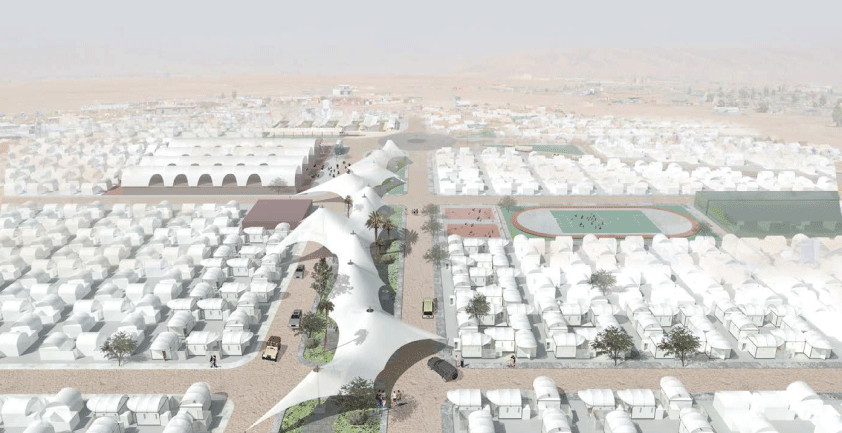
Brief
Nearly 4000,000 Syrian are forced to leave homeland because of war.
95% of them stay in other Arab countries, where social condition is also unrest and living condition is terrible.
Poor living condition cause both physical and mental diseases to them.
Thus, a comfortable living space is important for them to lead a normal life.
In this case, we selected Domiz camp in DOHUK,IRAQ as the focused site, trying to create new lifestyle for these homeless people.
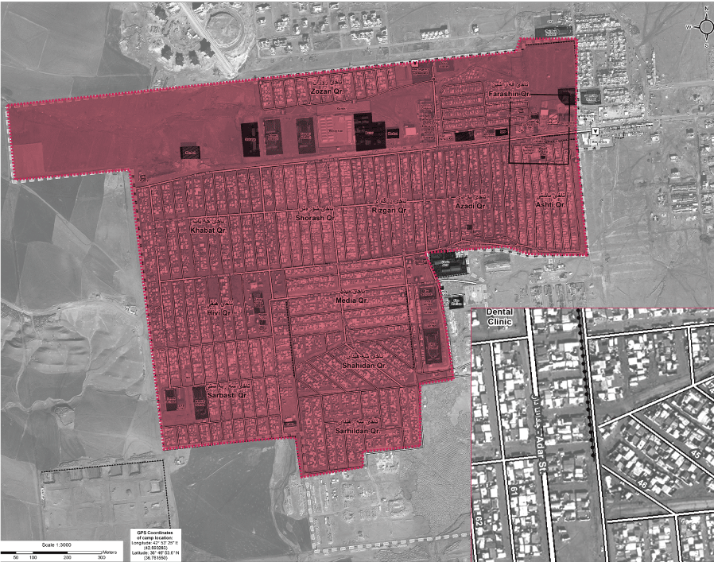
Question
How to improve living space to the greatest extent, with limited time and resource?
Solution
I design an industrized living box with standarlized and simple components, in order to save cost and time to build them.
Also, I design the living box from three perspectives: utility, usability, pleasurability.
Research
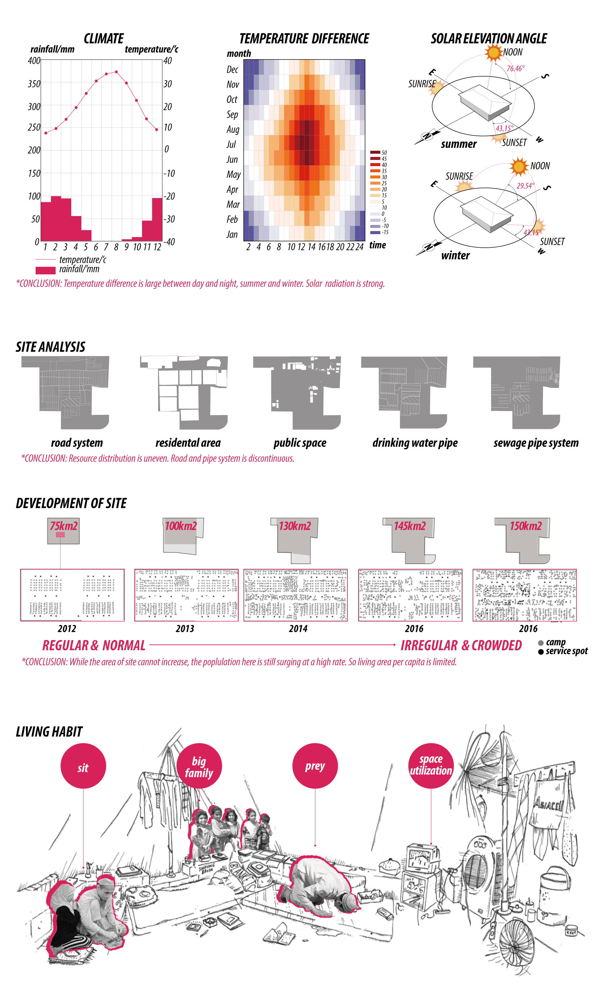
Design Strategy
Based on research, we conclude most important factors which we should take into consideration during design process.
Also, we will shape design strategy from three perspectives: Utility, Usability, Pleasurability
01. Design for Utility
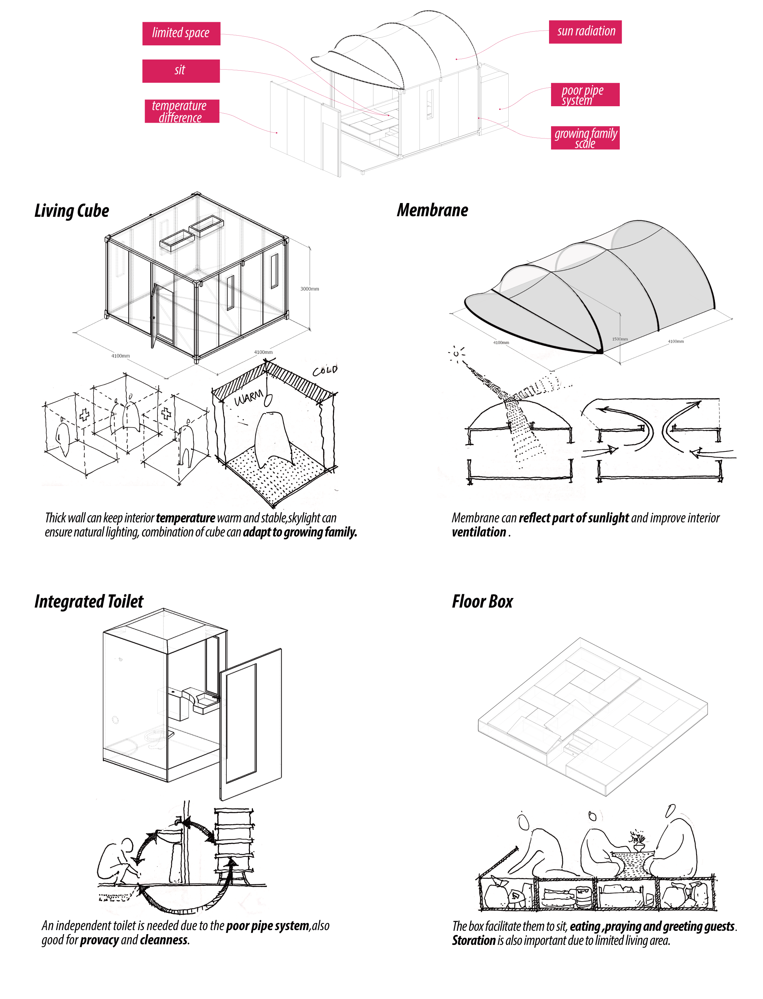
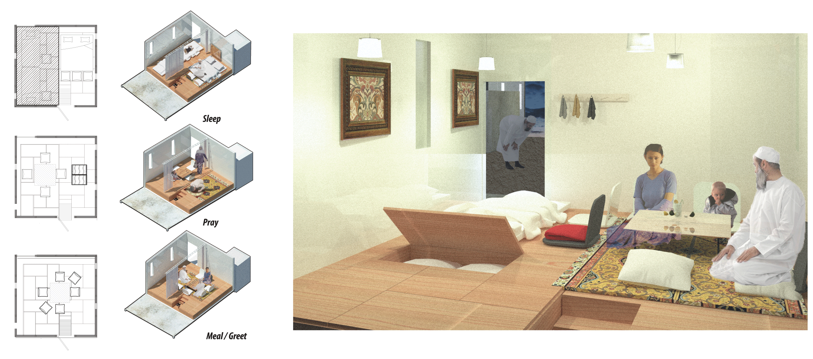
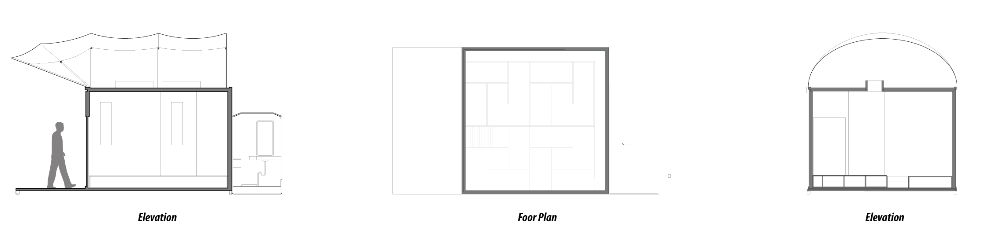
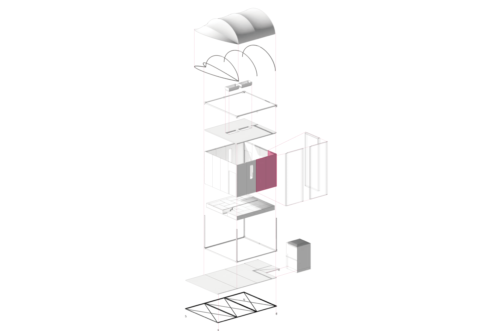
02. Design for Usability
TEST & ITERATION
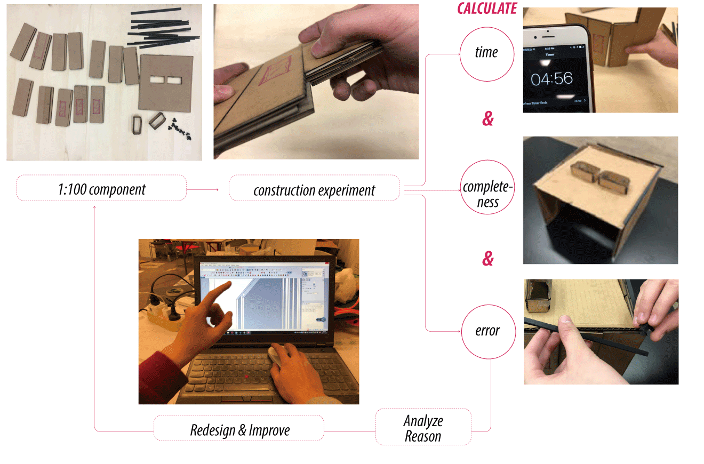
Test is conducted to record quantitative data about usability: Time spent on task, Succuss Rate, Error Rate.
Also, interaction pattern is recorded and other qualitative research is conducted during this test process(obeservation and interview) in order to get more insights.
INSTRUCTION
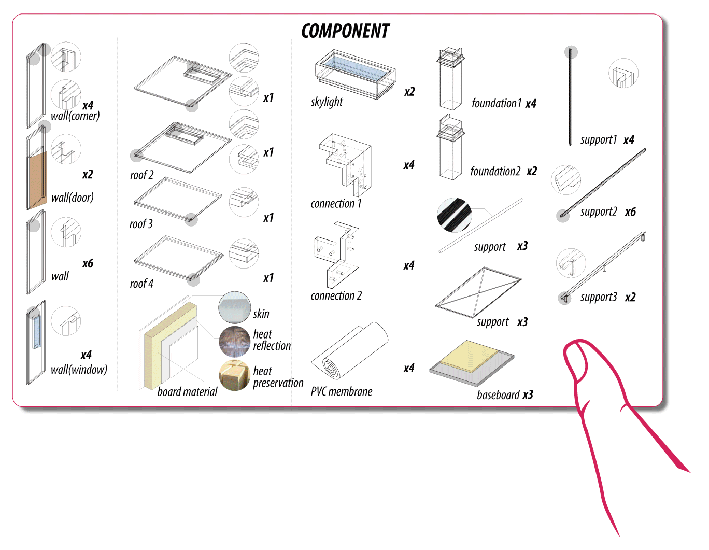
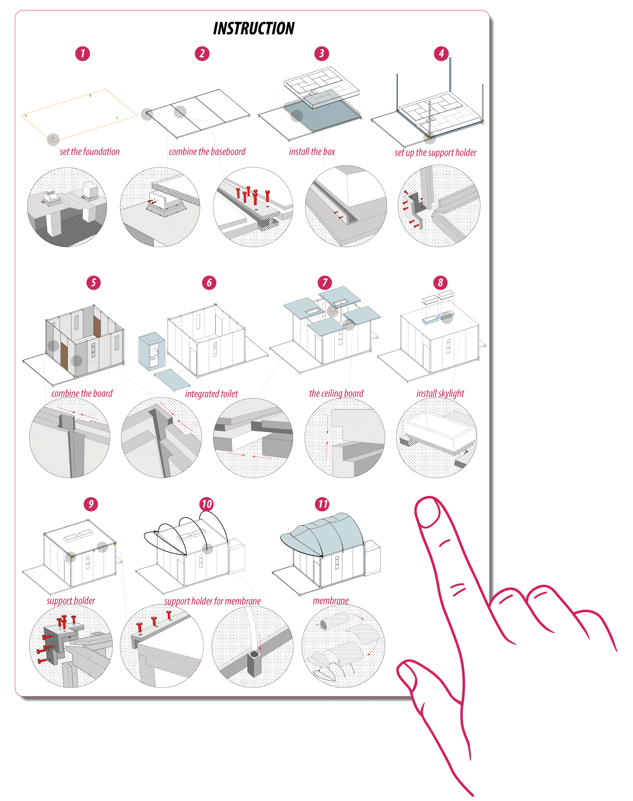
Visualized instruction is made for easy and quick building,
especially for people without professional knowldge in construction.
02. Design for Pleasurability
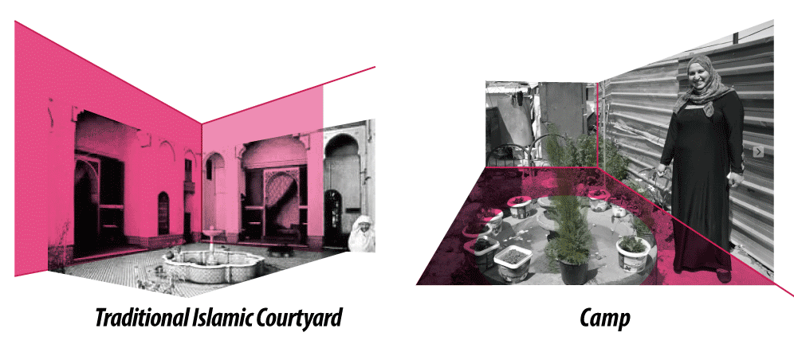
Courtyard is traditional residence culture for Middle Eest Area. It offers better socilization and privacy.
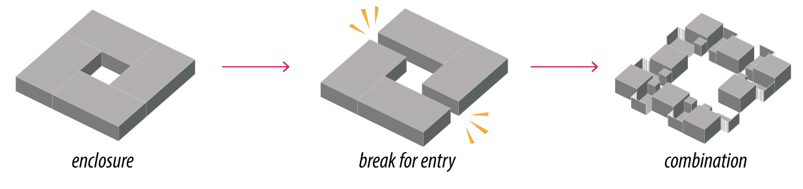
We apply courtyard in our design.
Thus, three combination modes are made for different living mode.

FINAL RENDERING
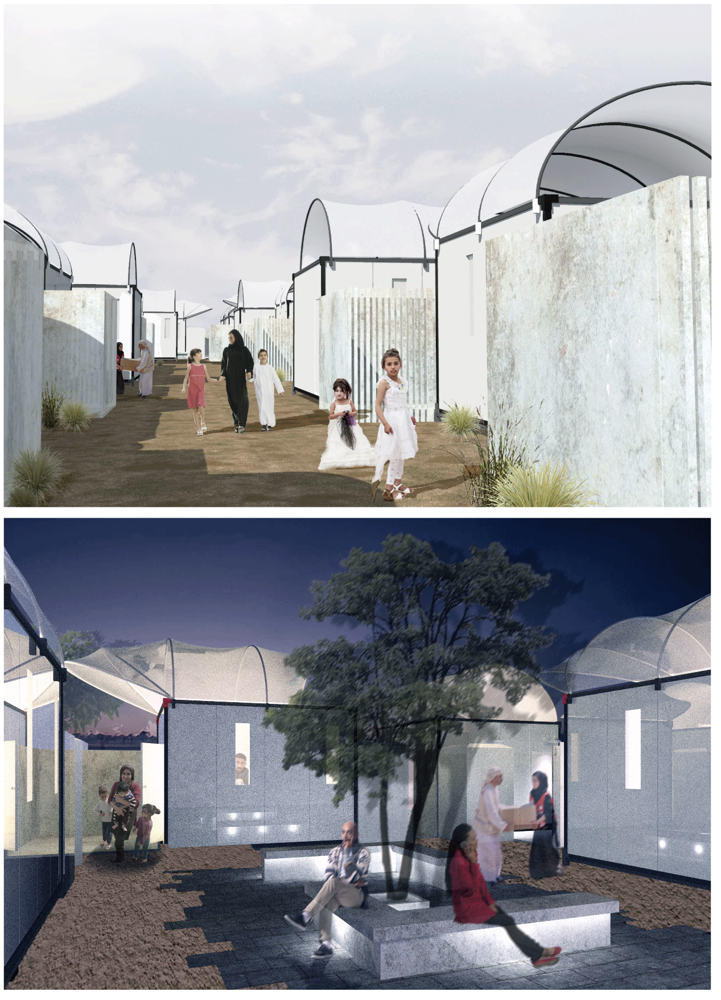